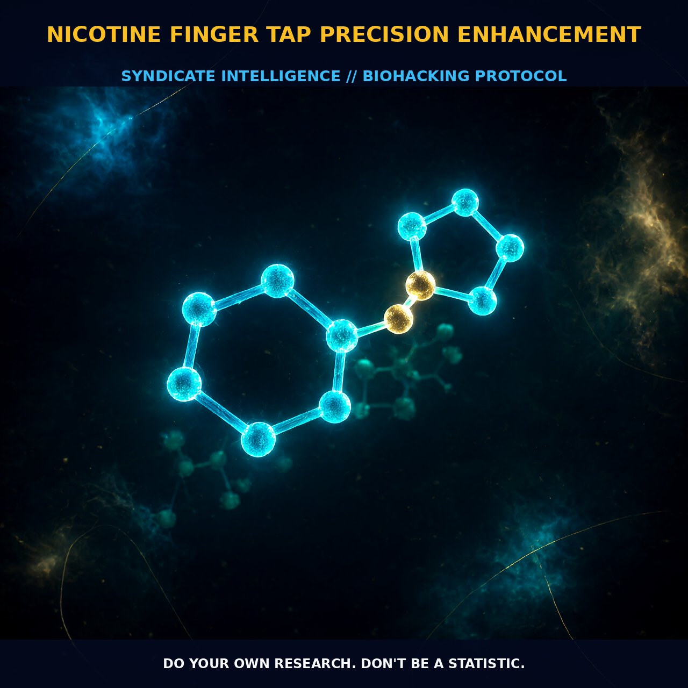

Enhancing Finger Tap Precision with Nicotine

1. The Mechanism
Nicotine, an arginine-derived neuromodulator, enhances cognitive and motor functions by interacting with nicotinic acetylcholine receptors (nAChRs) distributed throughout the central and peripheral nervous systems. When nicotine reaches the brain, it binds to multiple subtypes of nAChRs, particularly the α4β2 and α7 subtypes, which are critical for regulating neurotransmitter release and synaptic plasticity. Activation of these receptors modulates neuronal excitability and synaptic transmission, leading to improved attention, memory, and motor coordination.
The enhancement of motor precision, as observed in the finger tap test, is attributed to the modulation of the basal ganglia and sensorimotor cortex, regions integral to the control of fine motor skills. Nicotine's rapid uptake through various delivery methods, such as gum or patches, ensures that it reaches the brain quickly, producing effects within minutes to hours, depending on the dosage and form of administration.
The precise mechanism by which nicotine improves motor precision involves the enhancement of synaptic transmission in motor pathways. Nicotine increases the release of excitatory neurotransmitters, such as glutamate, and inhibits the release of inhibitory neurotransmitters, like GABA, leading to a net increase in neuronal excitability. This heightened excitability is particularly pronounced in motor cortex neurons, facilitating more rapid and accurate motor responses. Additionally, nicotine enhances the sensitivity of muscle fibers, leading to faster and more precise movements.
This is further supported by the modulation of calcium channels, which are crucial for the release of neurotransmitters and muscle contraction. Nicotine's effect on calcium channels leads to a more efficient coupling of neural signals to muscular responses, thereby enhancing motor coordination and precision.
2. Biological Leverage
Nicotine's impact on finger tap precision is rooted in its ability to modulate specific neural pathways and enhance synaptic transmission in the motor cortex and basal ganglia. The finger tap test is a common method for assessing fine motor control and precision, with nicotine showing significant improvements in both the speed and accuracy of finger taps. This enhancement is primarily due to the activation of nicotinic receptors in the motor cortex, which leads to an increase in the firing rate of motor neurons. This, in turn, results in faster and more precise muscle contractions, as evidenced by the increased speed and fluency of handwriting and finger tapping observed in nicotine users.
The improvement in motor precision is also linked to nicotine's modulation of neurotransmitter release and synaptic plasticity. Nicotine increases the release of acetylcholine, a key neurotransmitter in the motor pathways, enhancing the efficiency of motor neuron firing and muscle contraction. This effect is further compounded by the modulation of glutamate and GABA release, leading to a more robust and precise motor response. Additionally, nicotine's effect on calcium channels enhances the coupling of neural signals to muscle contractions, ensuring that motor commands are executed with greater speed and accuracy.
This is particularly evident in the rapid and controlled movements observed during finger tapping and handwriting tasks, where precise control is crucial. Nicotine's enhancement of motor precision is also influenced by its impact on the basal ganglia, a brain region crucial for the regulation of motor movements. The basal ganglia are involved in the initiation, control, and modulation of voluntary movements, and nicotine's modulation of nAChRs in this region leads to improved motor coordination. The basal ganglia are interconnected with the motor cortex and other motor-related brain regions, forming a complex network that regulates motor control. Nicotine's effect on this network enhances the precision and fluency of motor movements, as observed in the finger tap test.
3. Tactical Implementation
For optimal performance in the finger tap test, nicotine should be administered in low-to-moderate amounts to avoid toxicity while ensuring sufficient receptor activation. The ideal dose range is typically between 1-2 mg, which can be achieved through nicotine gum, lozenges, or patches. Nicotine gum or lozenges provide a more controlled release, allowing for precise dosing and better management of the dose-response curve. For instance, taking half of a 2 mg lozenge can provide a cognitive shift within 15 minutes, as noted by Dave Asprey.
This dosage is effective for enhancing motor precision without causing significant side effects. Timing is critical for maximizing the benefits of nicotine. It is advisable to administer nicotine approximately 15 to 30 minutes before the finger tap test to allow for optimal receptor activation and neurotransmitter modulation. This window ensures that the effects of nicotine are well-established before the test, leading to enhanced motor precision and accuracy. Additionally, combining nicotine with caffeine can further enhance its effects, as caffeine potentiates the release of acetylcholine, supporting more robust motor responses.
Stacking nicotine with other nootropics, such as L-theanine or Bacopa Monnieri, can also enhance its benefits. L-theanine, in particular, can reduce the jitteriness and anxiety often associated with nicotine use, allowing for a smoother cognitive enhancement. Bacopa Monnieri, known for its memory-enhancing properties, can further support the cognitive benefits of nicotine, leading to a more comprehensive enhancement of motor and cognitive functions.
Prostar Life Hack
For optimal finger tap precision, administer nicotine in a dose range of 1-2 mg, using gum or lozenges, 15-30 minutes before the test. Combining nicotine with caffeine or L-theanine can further enhance its effects.
[ AUTHOR: LEAD TECHNICAL RESEARCHER ]